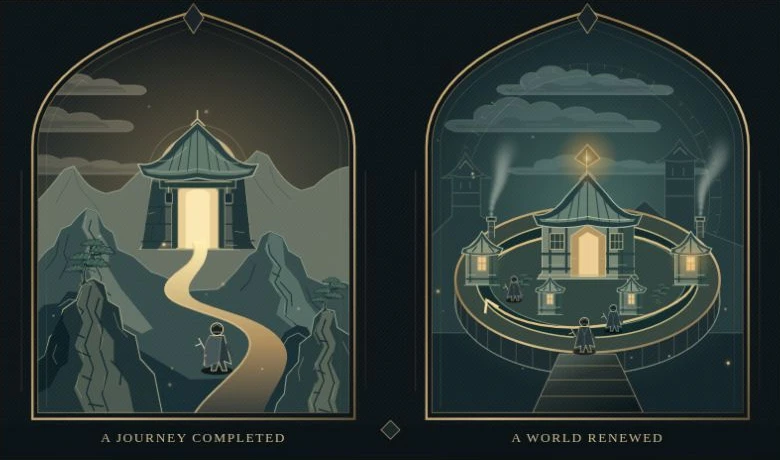

Coherent construction
Layered rock faces, ink cuts, timber joints and branching pines share a visual language. Detail follows structure and material.
Design system 1.1
Local reference · 02 Oct 2026
Stepanoskin / Loopforge
Quiet reading. Inhabited worlds. Instruments that make an argument tangible.
Captured from the approved local work. The opening is the illustration quality reference; the rest of the deck remains in editorial and visual iteration.

Diablo II’s acts gave a character’s growth a route through an unfolding adventure. Diablo IV’s seasonal play can organize a run around a changing set of activities and goals, with the campaign optional when eligible. Both make room for another character, another build and another playthrough. The distinction is how a run takes shape; what the studio sells needs a separate look.
Original procedural scene · Still from the local preview · The caption interprets the stakes, beyond describing the image.Layered rock faces, ink cuts, timber joints and branching pines share a visual language. Detail follows structure and material.
Graphic clouds cross the sky. Smoke rises from fixed chimneys. Birds beat, then glide. Motes drift and flicker independently.
Carry the level of craft into every chapter. Build each scene around its own idea; a shop, chapel and arcade need different compositions.
02 / Materials
Brass draws the frame. Bone carries the words. Teal gives the machinery depth; ember marks a focal light or consequence. These scopes share a family while retaining their own values.
#0c0d0c#eee9dc#cdc8bd#a9a395#b7a16a#36332b#101b20#e4d5b8#bfa36c#89bfb0#e89969#a6b4a8#bd965bEmber #e47442Teal #74b5abInk #0d1619Bone #e9d8b6#020302Bone #f1edc9Acid #e7df55Amber #d6a348Muted #8f9687Use texture on the frame and hardware; let prose sit on a quiet field. Glow belongs to a small source of light. Scope matters: illustration pigments are not a tested UI text palette.
03 / Typography & rhythm
Georgia carries the essay. Arial carries navigation and controls. Normal-weight titles and restrained uppercase labels create hierarchy without competing with the scene.
Chapter 01 / The fork
The fork
Diablo IV still runs on a familiar rhythm: fight, find better equipment, grow stronger. The game built around that rhythm—and the ways it asks us to pay—have changed.
The word “purchase” conceals several different relationships with a game.
Replayability describes what play can continue to offer. Recurring revenue describes how the business receives further payments.
42–75px / 1.04 · −.045emGeorgia, normal weight. Current mobile override: 46px.19px / 1.85 · max 730px18px on small screens; 24px between paragraphs.16px / 1.7Interpret the stakes. Keep essential context legible.Arial / Noto Sans fallbackSmall uppercase markers; sentence-case action labels.04 / Working instruments
Change one meaningful condition. Keep the comparison readable. Explain the consequence. This specimen reproduces the opening instrument's three lenses; try each one.
Compare the structure of a run, its replayability and the work behind it.
What organizes a character’s run?
Acts and quests take the character through a sequence of places and conflicts. Normal, Nightmare and Hell repeat that journey at higher difficulty.
Seasonal goals and activities give a fresh character a framework for a run. Eligible characters can begin without replaying the campaign.
This compares organizing structures. D2 also supports repeated activities, and a D4 seasonal character can follow the campaign. Neither game fits only one side.
State swatches above are static references. The three choices in the specimen are real buttons: tab to inspect focus and use Enter or Space to activate. Production exhibit controls have a 44px minimum height; hover and focus remain silent.
05 / Living worlds
Give movement an origin, a direction and a believable change over time. The illustration stays useful as a still. Reading never depends on motion.
Clouds stay behind the skyline. Smoke expands as it rises from a chimney. Birds alternate wingbeats with glides. Motes drift and flicker at different phases. A displaced gradient is not enough to imply a physical process.
Shadows, embers and fire are distinct layers. The restrained fire fringe appears only at the document end. Devil eyes pulse over 3.6 seconds; occasional signal tears share the landing's moderated rhythm.
The reference image is intentionally a still. Inspect movement in the local reader. These caps describe current implementations, not a per-element allowance or an audited frame-time promise.
06 / Editorial & delivery
Let the image establish the relationship, the caption explain its stakes, the instrument test it, and the prose develop the argument with evidence.
Use concrete actors and actions. Introduce a game or mechanic before relying on it. Keep returning-character stories and transaction taxonomies in the chapters where they become the actual subject.
Combine original scenes and instruments with selected, credited game imagery. Each citation has an analytical purpose and a public source record; preserve embedded marks and distinguish source pixels from original reconstructions.
Use semantic buttons, visible focus, pressed states, live readouts and useful alternatives to illustrations. Honor both OS reduced motion and the manual setting. Native dialogs support keyboard dismissal.
English, French, Spanish, Russian, Mandarin and Thai. The manuscript remains a disclosed English edition. Leave room for native scripts and expanded labels before translating the full text.
Optimized files and manifests are content-hashed and immutable. A short-cached pointer discovers later releases. First paint uses the compiled manifest; later media loads as needed.
The opening is the approved craft reference. Later chapters, copy editing, small controls and responsive accessibility still need review as the project evolves. This sheet documents the local design.